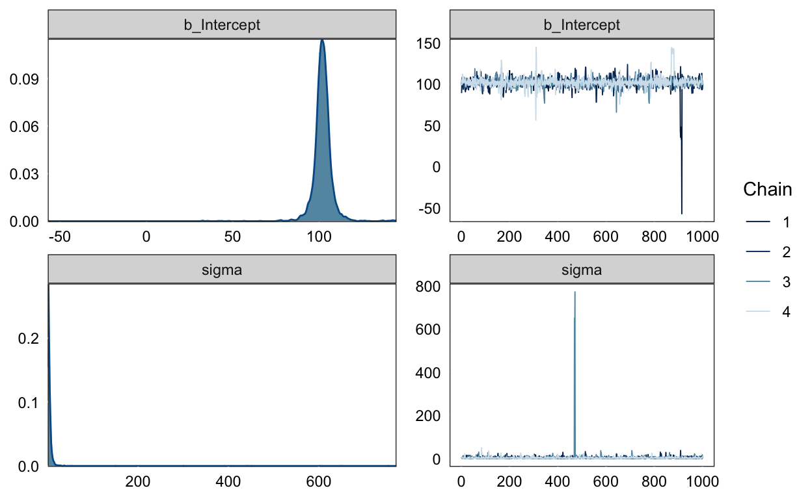
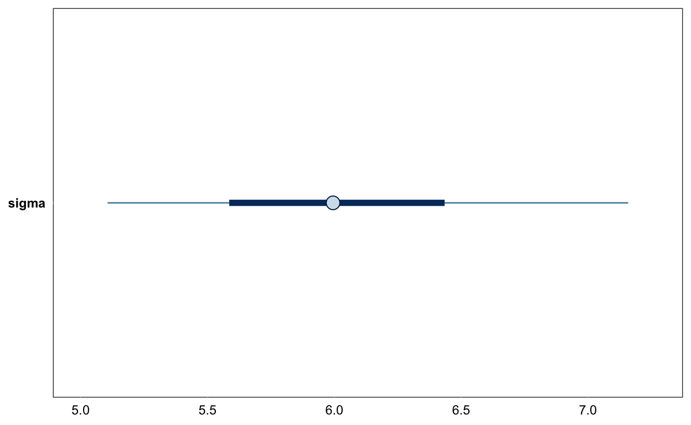
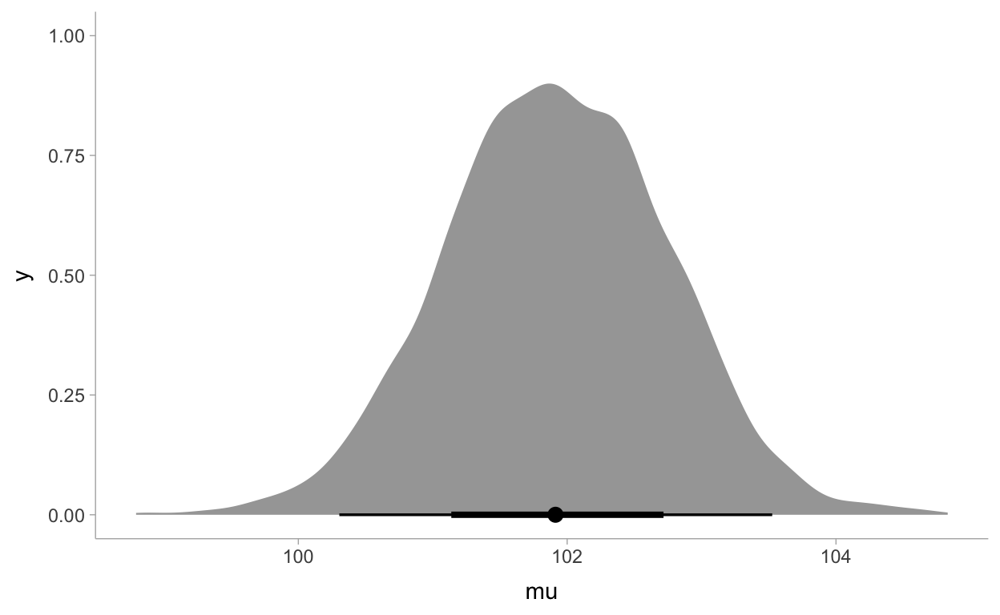
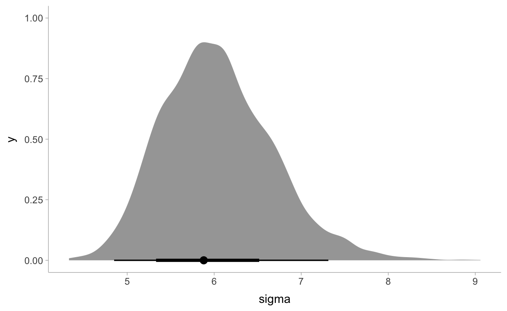
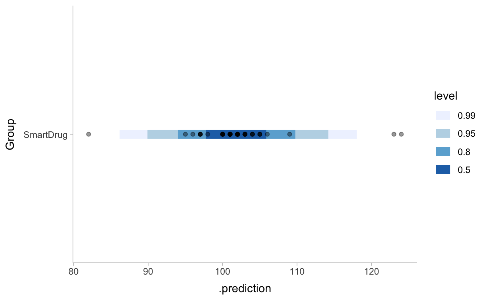
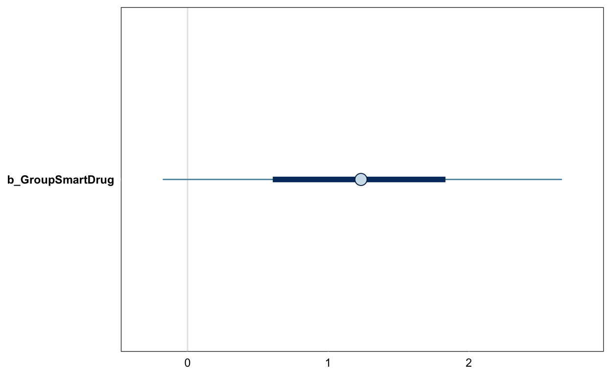
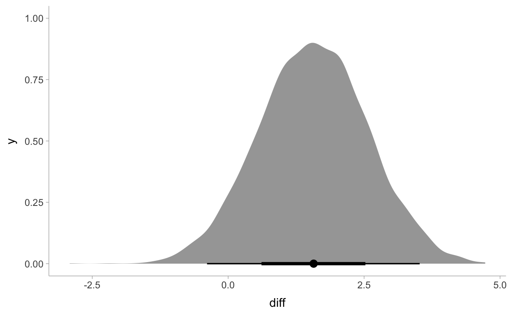

Mittelwert und Standardabweichung einer Normalverteilung schätzen
Wir haben 3 Datenpunkte mit den Werten $ y_1 = 85$ , \(y_2 = 100\), und \(y_3 = 115\). Wenn wir annehmen, dass diese Datenpunkte aus einer Normalverteilung kommen
\[ p(y | \mu, \sigma) = \frac{1}{Z} exp \left(- \frac{1}{2} \frac{(y-\mu)^2}{\sigma^2}\right) \] \(Z = \sigma \sqrt{2\pi}\) ist eine Normalisierungskonstante.
Wir können so die Wahrscheinlichkeit eines Datenpunktes berechnen, wenn wir wissen, was wir für \(\mu\) und \(\sigma\) einsetzen wollen. Unter der Annahme, dass die drei Datenpunkte unabhängig sind, ist die Wahrscheinlichkeit der Daten das Produkt der Einzelwahrscheinlichkeit.
Wie aber finden wir die beiden Parameter der Normalverteilung, \(\mu\) und \(\sigma\)?
Figure 1: Graphical Model für normalverteilte Daten.
sequence_length <- 100
d1 <- crossing(y = seq(from = 50, to = 150, length.out = sequence_length),
mu = c(87.8, 100, 112),
sigma = c(7.35, 12.2, 18.4)) %>%
mutate(density = dnorm(y, mean = mu, sd = sigma),
mu = factor(mu, labels = str_c("mu==", c(87.8, 100, 112))),
sigma = factor(sigma,
labels = str_c("sigma==", c(7.35, 12.2, 18.4))))
library(rmarkdown)
d1 %>%
paged_table(options = list(rows.print = 6))
d1 %>%
ggplot(aes(x = y)) +
geom_ribbon(aes(ymin = 0, ymax = density),
fill = "steelblue") +
geom_vline(xintercept = c(85, 100, 115),
linetype = 3, color = "white") +
geom_point(data = tibble(y = c(85, 100, 115)),
aes(y = 0.002),
size = 2, color = "red") +
scale_y_continuous(expression(italic(p)(italic(y)*"|"*mu*", "*sigma)),
expand = expansion(mult = c(0, 0.05)), breaks = NULL) +
ggtitle("Welche Normalverteilung?") +
coord_cartesian(xlim = c(60, 140)) +
facet_grid(sigma ~ mu, labeller = label_parsed) +
theme_bw() +
theme(panel.grid = element_blank())

t-Test als Lineares Modell
Wir nehmen als Beispiel folgenden (fiktiven) Datensatz (Kruschke 2015). WIr haben IQ Scores einer Stichprobe, welche eine “Smart Drug” konsumiert hat. Wir wissen, dass IQ so normiert sind, dass wir in der Bevölkerung einen Mittelwert von 100, und eine Standardabweichung von 15 haben. Nun wollen wir wissen, ob und wie sich die “Smart Drug” Gruppe von von diesem erwarteten Mittelwert unterscheidet. Gleichzeitig haben wir auch eine Gruppe, welche ein Placebo konsumiert hat.
Die Daten sind aus Kruschke (2015); wir können hier einfach die Daten von Hand eingeben, und zu einem Dataframe zusammenfügen:
smart = tibble(IQ = c(101,100,102,104,102,97,105,105,98,101,100,123,105,103,
100,95,102,106,109,102,82,102,100,102,102,101,102,102,
103,103,97,97,103,101,97,104,96,103,124,101,101,100,
101,101,104,100,101),
Group = "SmartDrug")
placebo = tibble(IQ = c(99,101,100,101,102,100,97,101,104,101,102,102,100,105,
88,101,100,104,100,100,100,101,102,103,97,101,101,100,101,
99,101,100,100,101,100,99,101,100,102,99,100,99),
Group = "Placebo")
TwoGroupIQ <- bind_rows(smart, placebo) %>%
mutate(Group = fct_relevel(as.factor(Group), "Placebo"))
TwoGroupIQ %>%
group_by(Group) %>%
summarise(mean = mean(IQ),
sd = sd(IQ)) %>%
mutate(across(where(is.numeric), round, 2)) %>%
kbl() %>%
kable_styling(bootstrap_options = c("striped", "hover"))
| Group | mean | sd |
|---|---|---|
| Placebo | 100.36 | 2.52 |
| SmartDrug | 101.91 | 6.02 |
d <- TwoGroupIQ %>%
filter(Group == "SmartDrug") %>%
mutate(Group = fct_drop(Group))
d %>%
ggplot(aes(x = IQ)) +
geom_histogram(fill = "skyblue3", binwidth = 1) +
scale_y_continuous(expand = expansion(mult = c(0, 0.05)))

priors <- get_prior(IQ ~ 1,
data = d)
priors
prior class coef group resp dpar nlpar bound
student_t(3, 102, 3) Intercept
student_t(3, 0, 3) sigma
source
default
defaultlibrary(tidybayes)
priors_df <- priors %>%
parse_dist(prior)
priors_df %>%
ggplot(aes(y = class, dist = .dist, args = .args)) +
stat_dist_halfeye() +
facet_wrap(~class, scales = "free_x")

priors_df %>%
mutate(class = case_when(coef == "" ~ class,
coef == "Intercept" ~ "Intercept"))
prior class coef group resp dpar nlpar bound
1 student_t(3, 102, 3) Intercept
2 student_t(3, 0, 3) sigma
source .dist .args
1 default student_t 3, 102, 3
2 default student_t 3, 0, 3priors_df %>%
ggplot(aes(y = class, dist = .dist, args = .args)) +
stat_dist_halfeyeh() +
labs(title = "Prior distributions",
x = NULL)

tibble(x = seq(from = 0, to = 10, by = .025)) %>%
mutate(d = dt(x, df = 3)) %>%
ggplot(aes(x = x, ymin = 0, ymax = d)) +
geom_ribbon(fill = "skyblue3") +
scale_x_continuous(expand = expansion(mult = c(0, 0.05))) +
scale_y_continuous(expand = expansion(mult = c(0, 0.05)), breaks = NULL) +
coord_cartesian(xlim = c(0, 8),
ylim = c(0, 0.35)) +
xlab(expression(sigma)) +
labs(subtitle = "Half-student-t Distribution: Prior für Standardabweichung.") +
theme_bw(base_size = 14)

tibble(x = seq(from = 0, to = 200, by = .025)) %>%
mutate(d = dnorm(x, mean = 102, sd = 3)) %>%
ggplot(aes(x = x, ymin = 0, ymax = d)) +
geom_ribbon(fill = "skyblue3") +
scale_x_continuous(expand = expansion(mult = c(0, 0.05))) +
scale_y_continuous(expand = expansion(mult = c(0, 0.05)), breaks = NULL) +
coord_cartesian(xlim = c(50, 150),
ylim = c(0, 0.15)) +
xlab(expression(sigma)) +
labs(subtitle = "Normalverteilter Prior für Mittelwert") +
theme_bw(base_size = 14)

m1_prior <- brm(IQ ~ 1,
prior = priors,
data = d,
sample_prior = "only",
file = "models/twogroupiq-prior-1")
plot(m1_prior)

prior_pred_1 <- d %>%
modelr::data_grid(Group) %>%
add_predicted_draws(m1_prior) %>%
ggplot(aes(y = Group, x = .prediction)) +
stat_interval(.width = c(.50, .80, .95, .99)) +
geom_point(aes(x = IQ), alpha = 0.4, data = d) +
scale_color_brewer() +
theme_tidybayes()
prior_pred_1

m1 <- brm(IQ ~ 1,
prior = priors,
data = d,
file = "models/twogroupiq-1")
plot(m1)

print(m1)
Family: gaussian
Links: mu = identity; sigma = identity
Formula: IQ ~ 1
Data: d (Number of observations: 47)
Samples: 4 chains, each with iter = 2000; warmup = 1000; thin = 1;
total post-warmup samples = 4000
Population-Level Effects:
Estimate Est.Error l-95% CI u-95% CI Rhat Bulk_ESS Tail_ESS
Intercept 101.92 0.83 100.31 103.53 1.00 3134 2075
Family Specific Parameters:
Estimate Est.Error l-95% CI u-95% CI Rhat Bulk_ESS Tail_ESS
sigma 6.04 0.64 4.96 7.47 1.00 3060 2458
Samples were drawn using sampling(NUTS). For each parameter, Bulk_ESS
and Tail_ESS are effective sample size measures, and Rhat is the potential
scale reduction factor on split chains (at convergence, Rhat = 1).
samples <- posterior_samples(m1) %>%
transmute(mu = b_Intercept, sigma = sigma)
library(tidybayes)
samples %>%
select(mu) %>%
median_qi(.width = c(.50, .80, .95, .99)) %>%
ggplot(aes(x = mu, xmin = .lower, xmax = .upper)) +
geom_pointinterval() +
ylab("") +
theme_tidybayes()

samples %>%
select(mu) %>%
ggplot(aes(x = mu)) +
stat_halfeye() +
theme_tidybayes()

samples %>%
select(sigma) %>%
ggplot(aes(x = sigma)) +
stat_halfeye(point_interval = mode_hdi) +
theme_tidybayes()

post_pred_1 <- d %>%
modelr::data_grid(Group) %>%
add_predicted_draws(m1) %>%
ggplot(aes(y = Group, x = .prediction)) +
stat_interval(.width = c(.50, .80, .95, .99)) +
geom_point(aes(x = IQ), alpha = 0.4, data = d) +
scale_color_brewer() +
theme_tidybayes()
post_pred_1

cowplot::plot_grid(prior_pred_1,
post_pred_1,
labels = c('Prior predictive', 'Posterior predictive'),
label_size = 12,
align = "h",
nrow = 2)

Zwei Gruppen


t-Test as general linear model
Assuming equal variances, we can write
\[ Y = \alpha + \beta X + \epsilon\] \[ \epsilon \sim N(0, \sigma^2) \]
where \(X\) is indicates group membership.
levels(TwoGroupIQ$Group)
[1] "Placebo" "SmartDrug"Using R’s formula notation, we can write this as
fit_ols <- lm(IQ ~ Group,
data = TwoGroupIQ)
More formally:
\[ IQ = Placebo + \beta \cdot SmartDrug + \epsilon\]
\[ \epsilon \sim N(0, \sigma^2) \]
The \(\beta\) parameter therefore represents the difference between groups.
summary(fit_ols)
Call:
lm(formula = IQ ~ Group, data = TwoGroupIQ)
Residuals:
Min 1Q Median 3Q Max
-19.9149 -0.9149 0.0851 1.0851 22.0851
Coefficients:
Estimate Std. Error t value Pr(>|t|)
(Intercept) 100.3571 0.7263 138.184 <2e-16 ***
GroupSmartDrug 1.5578 0.9994 1.559 0.123
---
Signif. codes: 0 '***' 0.001 '**' 0.01 '*' 0.05 '.' 0.1 ' ' 1
Residual standard error: 4.707 on 87 degrees of freedom
Multiple R-squared: 0.02717, Adjusted R-squared: 0.01599
F-statistic: 2.43 on 1 and 87 DF, p-value: 0.1227contrasts(TwoGroupIQ$Group)
SmartDrug
Placebo 0
SmartDrug 1mm1 <- model.matrix(~ Group, data = TwoGroupIQ)
head(mm1)
(Intercept) GroupSmartDrug
1 1 1
2 1 1
3 1 1
4 1 1
5 1 1
6 1 1as_tibble(mm1) %>%
group_by(GroupSmartDrug) %>%
slice_sample(n= 3)
# A tibble: 6 x 2
# Groups: GroupSmartDrug [2]
`(Intercept)` GroupSmartDrug
<dbl> <dbl>
1 1 0
2 1 0
3 1 0
4 1 1
5 1 1
6 1 1mm2 <- model.matrix(~ 0 + Group, data = TwoGroupIQ)
as_tibble(mm2) %>%
group_by(GroupSmartDrug) %>%
slice_sample(n= 3)
# A tibble: 6 x 2
# Groups: GroupSmartDrug [2]
GroupPlacebo GroupSmartDrug
<dbl> <dbl>
1 1 0
2 1 0
3 1 0
4 0 1
5 0 1
6 0 1Figure 2: Graphical Model für 2 Gruppen.
priors2 <- get_prior(IQ ~ 1 + Group,
data = TwoGroupIQ)
priors2
prior class coef group resp dpar
(flat) b
(flat) b GroupSmartDrug
student_t(3, 101, 2.5) Intercept
student_t(3, 0, 2.5) sigma
nlpar bound source
default
(vectorized)
default
defaultpriors3 <- get_prior(IQ ~ 0 + Group,
data = TwoGroupIQ)
priors3
prior class coef group resp dpar nlpar
(flat) b
(flat) b GroupPlacebo
(flat) b GroupSmartDrug
student_t(3, 0, 2.5) sigma
bound source
default
(vectorized)
(vectorized)
defaultpriors2_b <- prior(normal(0, 2), class = b)
m2_prior <- brm(IQ ~ 1 + Group,
prior = priors2_b,
data = TwoGroupIQ,
sample_prior = "only",
file = "models/twogroupiq-prior-2")
prior_pred_2 <- TwoGroupIQ %>%
modelr::data_grid(Group) %>%
add_predicted_draws(m2_prior) %>%
ggplot(aes(y = Group, x = .prediction)) +
stat_interval(.width = c(.50, .80, .95, .99)) +
geom_point(aes(x = IQ), alpha = 0.4, data = TwoGroupIQ) +
scale_color_brewer() +
theme_tidybayes()
prior_pred_2
priors3_b <- prior(normal(100, 10), class = b)
m3_prior <- brm(IQ ~ 0 + Group,
prior = priors3_b,
data = TwoGroupIQ,
sample_prior = "only",
file = "models/twogroupiq-prior-3")
prior_pred_3 <- TwoGroupIQ %>%
modelr::data_grid(Group) %>%
add_predicted_draws(m3_prior) %>%
ggplot(aes(y = Group, x = .prediction)) +
stat_interval(.width = c(.50, .80, .95, .99)) +
geom_point(aes(x = IQ), alpha = 0.4, data = TwoGroupIQ) +
scale_color_brewer() +
theme_tidybayes()
prior_pred_3

m2 <- brm(IQ ~ 1 + Group,
prior = priors2_b,
data = TwoGroupIQ,
file = "models/twogroupiq-2")
m3 <- brm(IQ ~ 0 + Group,
prior = priors3_b,
data = TwoGroupIQ,
file = "models/twogroupiq-3")
summary(m2)
Family: gaussian
Links: mu = identity; sigma = identity
Formula: IQ ~ 1 + Group
Data: TwoGroupIQ (Number of observations: 89)
Samples: 4 chains, each with iter = 2000; warmup = 1000; thin = 1;
total post-warmup samples = 4000
Population-Level Effects:
Estimate Est.Error l-95% CI u-95% CI Rhat Bulk_ESS
Intercept 100.51 0.69 99.18 101.90 1.00 3735
GroupSmartDrug 1.23 0.88 -0.49 2.95 1.00 3633
Tail_ESS
Intercept 2921
GroupSmartDrug 3160
Family Specific Parameters:
Estimate Est.Error l-95% CI u-95% CI Rhat Bulk_ESS Tail_ESS
sigma 4.72 0.36 4.09 5.52 1.00 3002 2088
Samples were drawn using sampling(NUTS). For each parameter, Bulk_ESS
and Tail_ESS are effective sample size measures, and Rhat is the potential
scale reduction factor on split chains (at convergence, Rhat = 1).summary(m3)
Family: gaussian
Links: mu = identity; sigma = identity
Formula: IQ ~ 0 + Group
Data: TwoGroupIQ (Number of observations: 89)
Samples: 4 chains, each with iter = 2000; warmup = 1000; thin = 1;
total post-warmup samples = 4000
Population-Level Effects:
Estimate Est.Error l-95% CI u-95% CI Rhat Bulk_ESS
GroupPlacebo 100.35 0.73 98.95 101.75 1.00 3914
GroupSmartDrug 101.92 0.69 100.62 103.28 1.00 4057
Tail_ESS
GroupPlacebo 3163
GroupSmartDrug 2954
Family Specific Parameters:
Estimate Est.Error l-95% CI u-95% CI Rhat Bulk_ESS Tail_ESS
sigma 4.71 0.36 4.07 5.45 1.00 3342 2697
Samples were drawn using sampling(NUTS). For each parameter, Bulk_ESS
and Tail_ESS are effective sample size measures, and Rhat is the potential
scale reduction factor on split chains (at convergence, Rhat = 1).mcmc_plot(m2, "b_GroupSmartDrug")

mcmc_plot(m3, "b")

samples_m3 <- posterior_samples(m3) %>%
transmute(Placebo = b_GroupPlacebo,
SmartDrug = b_GroupSmartDrug,
sigma = sigma)
samples_m3 <- samples_m3 %>%
mutate(diff = SmartDrug - Placebo,
effect_size = diff/sigma)
samples_m3 %>%
select(diff) %>%
median_qi()
diff .lower .upper .width .point .interval
1 1.57189 -0.3887631 3.521777 0.95 median qisamples_m3 %>%
select(diff) %>%
ggplot(aes(x = diff)) +
stat_halfeye(point_interval = median_qi) +
theme_tidybayes()

samples_m3 %>%
select(effect_size) %>%
ggplot(aes(x = effect_size)) +
stat_halfeye(point_interval = median_qi) +
theme_tidybayes()

fit_eqvar <- brm(IQ ~ Group,
data = TwoGroupIQ,
file = here::here("models/fit_eqvar"))
fit_eqvar %>%
gather_draws(b_GroupSmartDrug) %>%
ggplot(aes(y = .variable, x = .value)) +
stat_halfeye(fill = "Steelblue4") +
geom_vline(xintercept = 0, color = "white", linetype = 1, size = 1) +
ylab("") +
xlab("Estimated difference") +
theme_tidybayes()

grid <- TwoGroupIQ %>%
modelr::data_grid(Group)
fits_IQ <- grid %>%
add_fitted_draws(fit_eqvar)
preds_IQ <- grid %>%
add_predicted_draws(fit_eqvar)
pp_eqvar <- TwoGroupIQ %>%
ggplot(aes(x = IQ, y = Group)) +
stat_halfeye(aes(x = .value),
scale = 0.7,
position = position_nudge(y = 0.1),
data = fits_IQ,
.width = c(.66, .95, 0.99)) +
stat_interval(aes(x = .prediction),
data = preds_IQ,
.width = c(.66, .95, 0.99)) +
scale_x_continuous(limits = c(75, 125)) +
geom_point(data = TwoGroupIQ) +
scale_color_brewer() +
labs(title = "Equal variance model predictions") +
theme_tidybayes()
pp_eqvar